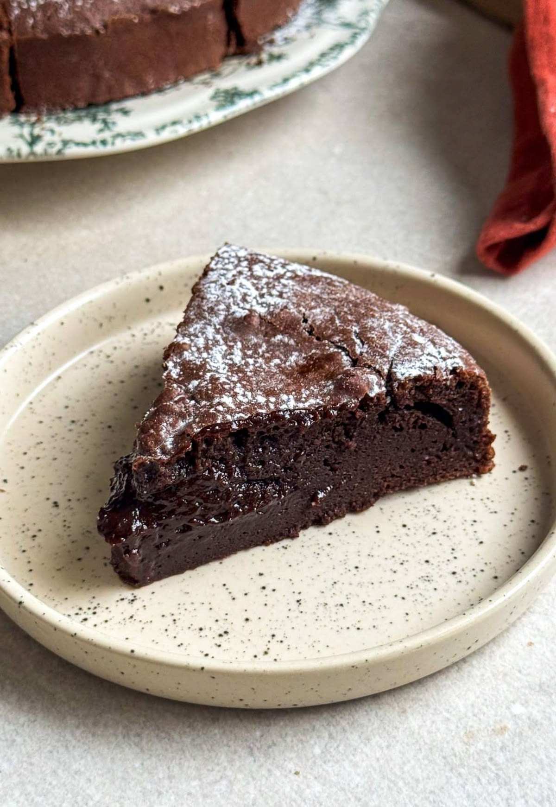

Kladdkaka
Home

This dessert is said to have been created by a mistake. The baker forgot
baking soda and wound up with a "sticky cake" as it is called in swedish.
Ingredients:
-
butter for the mold
-
breadcrumbs for the mold
-
100g butter
-
2 eggs
-
2 1/2 dl powdered sugar
-
3 tablespoons cocoa
-
2 tablespoons vanilla sugar
-
1 1/2 dl flour
-
a small pinch of salt
-
Icing sugar for Garnish
-
2dl whipped cream
-
Fresh berries
Instructions:
-
Set the oven to 200°C, top and bottom heat.
-
Grease and flour a springform pan, approx. 24 cm in diameter (for 8 pieces)
or line the bottom with baking paper.
-
Melt the butter in a saucepan, let cool slightly.
- Whisk together the eggs and sugar (do not use an electric whisk).
- Mix cocoa, vanilla sugar, wheat flour and salt in a bowl and stir
into the egg mixture.
- Add the melted butter and mix gently until smooth, then pour the
batter into the pan.
-
Bake in the middle of the oven for about 10-15 minutes
(increase or decrease the time if necessary depending on
how gooey you want it).
-
Take out the cake and let it cool.
-
Sift powdered sugar over top if desired.
Serve with whipped cream and fresh berries.